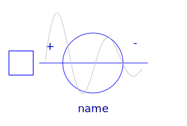
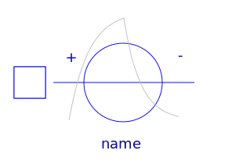
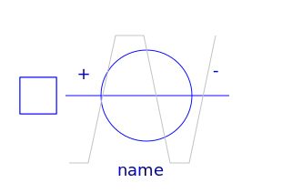
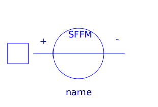
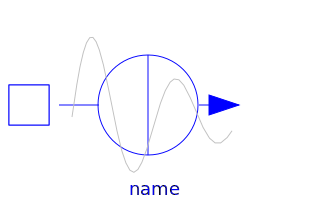
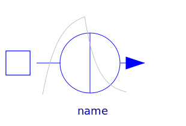
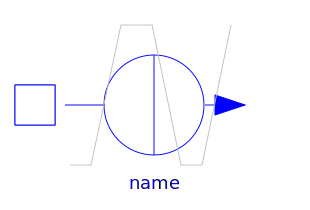
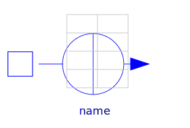
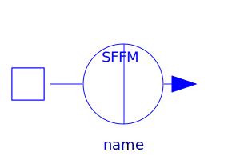

This package contains the SPICE sources.
Note: There are differences between SPICE3 and Modelica concerning the default values of the parameter. Therefore it is recommended to specify all parameters of the source.
| Name | Description |
|---|---|
| Constant independent voltage sources | |
|  V_sin | Sinusoidal voltage source |
|  V_exp | Exponential voltage source |
|  V_pulse | Pulse voltage source |
| Piece-wise linear voltage source | |
|  V_sffm | Single-frequency FM voltage source |
| Constant independent current sources | |
|  I_sin | Sinusoidal current source |
|  I_exp | Exponential current source |
|  I_pulse | Pulse current source |
|  I_pwl | Piece-wise linear current source |
|  I_sffm | Single-frequency FM current source |